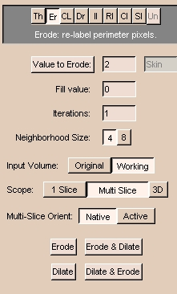
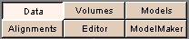

Using the Editing Effects
Threshold effect
The goal of thresholding is to limit the output image to only those pixels
whose signal intensity is between the lower and upper bounds you select.
In the new output volume, all the pixels will have a single label (the Output color).
Threshold is useful for separating the anatomy of interest
from surrounding anatomy, based on the signal intensity of the anatomy of interest. For example, Threshold works well for segmenting bone in CT data.
To use Threshold:
- Click Threshold. This panel appears:

- Select the Input Volume.
- Select the Scope and Interact ranges.
- Click Output and select a color, or enter an Output color number. You can also enter an optional label for what that color will represent. For instance, in this example, the chosen color is 2 (orange) and the label is 'skin'.
- Adjust the Lo slider to exclude points whose signal intensity is too low.
- Adjust the Hi slider to exclude points whose signal intensity is too high.
- Click Apply to apply the thresholding effect. Slicer will update the
Working volume with your new label of thresholded data.
Results of thresholding
In the example below, we are segmenting the CT skull bone.
Thresholding has changed the label to be blue.
Notice that the skull is well-defined and separated from the rest of the image.

Erode effect
The Erode effect removes pixels at the border of all islands. Slicer considers an island to be a group of connected pixels that have the same label. Dilation is the opposite effect, and adds pixels around the borders of all islands.
Erode is useful for separating two distinct pieces of anatomy that are only partially connected, or for removing many small islands,
some of which are connected to the anatomy of interest (as shown below).
To use Erode:
- Click Erode. This panel appears:

- Select the Input Volume.
- Select the Scope range. Multi Slice applies the one-slice erosion to each slice.
3D treats the whole volume at once.
- Click Value to Erode and select a color, or enter a Value to Erode color number. Erode will act only on pixels with the selected Value to Erode color.
- Enter 0 for the Fill value.
- Enter the number of times to apply the effect in the Iterations field.
- Select 4 for Neighborhood Size for less erosion or 8 for more erosion.
- Select Active to apply Erode to the active view. Select Native to apply Erode to the original view.
- Click either:
- Erode to remove pixels with the Value to Erode from around islands.
- Dilate to add pixels with the Value to Erode around islands.
- Erode & Dilate to erode, then dilate.
- Dilate & Erode to dilate, then erode.
Results after using Erode:

Change Label effect
The Change Label effect changes the value of the label of pixels to another value.
Change Label is useful when you are merging two data sets together
and you want to keep the data sets distinct from each other.
To use Change Label:
- Click Change Label. This panel appears:
- Select the Input Volume.
- Select the Scope range.
- Enter a Value to change. This is the value of label of pixels in the Input Volume that Slicer will change.
- Click Output and select a color, or enter an Output color number. This is the new value that pixels with the Value to change will receive.
- Click Apply to apply the change label effect. Slicer will update the
Working volume with your newly labeled data.
Draw effect
The Draw effect lets you specify pixels by drawing directly on them using the mouse.
Draw is useful when automatic methods cannot segment the data correctly.
To use Draw:
- Click Draw. This panel appears:
- Click Output and select a color, or enter an Output color number. This is the new value that pixels you draw on will receive.
- Enter a value for the Point Radius, which controls how fine each line of the drawing is. Using a value of 1 or 2 allows you to select individual points.
- Select the Mode of the left mouse button in the draw window.
Draw is for drawing on points. Select is for selecting points. Move is for moving selected points.
- If the Mode is Select or Move, you can use:
- Select All to select all points.
- Deselect All to deselect all points.
- Delete Selected to delete selected points.
- Delete All to delete all points.
- Select the Render range.
- Select the Shape that the left mouse represents in the draw window.
- Click on the region of interest, using the left mouse button, and Slicer will draw as specified with the Mode.
You can use the right mouse button to zoom in and out on the area.
The middle mouse button (or Alt-Left button) moves the image in the window.
Note: If you encircle too much of an image in
a particular slice, use Draw with Black output to
create polygons around the extraneous areas; this acts like an
eraser. You may also delete the last selected point of your polygon by
selecting Delete Selected.
- To clear the list of points after you click Apply, click Yes. To keep the same points in a list after you click Apply, click No.
- When you have finished drawing the outline of the region of interest, click Apply.
Slicer will fill the region of interest with the Output color.
Identify Islands effect
The Identify Islands effect automatically assigns a unique label to each
"island" in the designated "sea", namely, the area containing the islands.
Identify Islands is useful when many separate islands have the same label, but belong to different structures.
To use Identify Islands:
- Click Identify Islands. This panel appears:
- Select the Input Volume.
- Select the Scope range.
- Enter Min Threshold and Max Threshold values to identify islands in a certain intensity range.
- Click any part of the "sea", namely, the area containing the islands. The islands within that area will receive a unique label.
Remove Islands effect
Remove Islands automatically removes areas based on size.
Remove Islands is useful for removing small areas
that should not have been thresholded.
For example, if you use a value of "10",
all islands less than 10 voxels in size will be removed.
Change Island effect
The Change Island effect changes the label of an "island" of pixels.
Slicer considers an island to be a group of connected pixels that have the same label.
Change Island is useful when, after applying an effect (particularly thresholding) to the volume, you still are not able to separate the anatomy you are interested in.
For example, surrounding areas may have the same signal intensity as the anatomy of interest, as in the case below: separating the skull is difficult because surrounding points have the same label as the skull itself.
To use Change Island:
- Click Change Island. This panel appears:
- Select the Input Volume.
- Select the Scope and Render ranges.
- Click New Label and select a color, or enter a New Label color number. This is the new label value that pixels in the selected island will receive.
- Click any part of the island. The pixels that are part of that island will receive the New Label value.
Results after using Change Island:

Save Island effect
Save Island will retain the selected island, and remove disconnected pixels with the same label.
Save Island is useful for separating a single connected structure from other structures.
Measure Island effect
The Measure Island effect calculates the volume of an island of pixels. Slicer considers an island to be a group of connected pixels that have the same label.
To use Measure Island:
- Click Measure Island. This panel appears:
- Select the Input Volume.
- Select the Scope range.
- Click Island Label and select a color, or enter an Island Label color number. Measure Island will calculate the volume of the pixels with the Island Label color in the selected island.
- Click any part of the island. Slicer will display the Size, in pixels, of the island you clicked. Slicer will also display the size of the Largest island within the selected Scope.
To calculate the total volume of the selected island, the following formula is used:
size * pixel_size * pixel_size * (thickness + spacing)
PhaseWire effect
PhaseWire is a semi-automatic effect to outline features on images by following edges or contours.
Using PhaseWire is a rapid way to outline a feature.
Warning: PhaseWire does not work in all versions of Slicer, and may cause Slicer to crash.
To use PhaseWire:
- Click PhaseWire. This panel appears:
- Click Basic. (Only the Basic features work.)
- Click Output and select a color, or enter an Output color number. This is the new value that pixels you outline will receive.
- Select the Render range.
- Select the Shape of the outline in the draw window. Polygon will close the shape that you outline by selecting points, when you click Apply. Lines will draw lines between points you select. Points will create points of color where you select.
- Select the Image Feature Size.
- Click the left mouse on the edge of the feature that you want to outline.
Release the mouse button, but follow the edge with the mouse.
If the "wire" starts to stray from the edge, click the mouse button to pull in the wire.
- To undo the last mouse click, click Undo Last Click.
- To start the outline process again, click Clear Contour.
- When you have finished drawing the outline of the region of interest, click Apply.
If Polygon is selected, Slicer will fill the region of interest with the Output color.
If Lines is selected, Slicer will outline the region of interest with the Output color.
After Segmenting
Save your segmented data (called a "label map").
- On the Main menu, click Editor.

The Editor panel appears.
- Click the Volumes tab. The Volumes tab appears.
- Select Save.
- Select the name of your label map for Volume to Save.
- Select a file name. It is often simplest to use the same name as
the Volume to Save.
- Save this file to the appropriate directory.